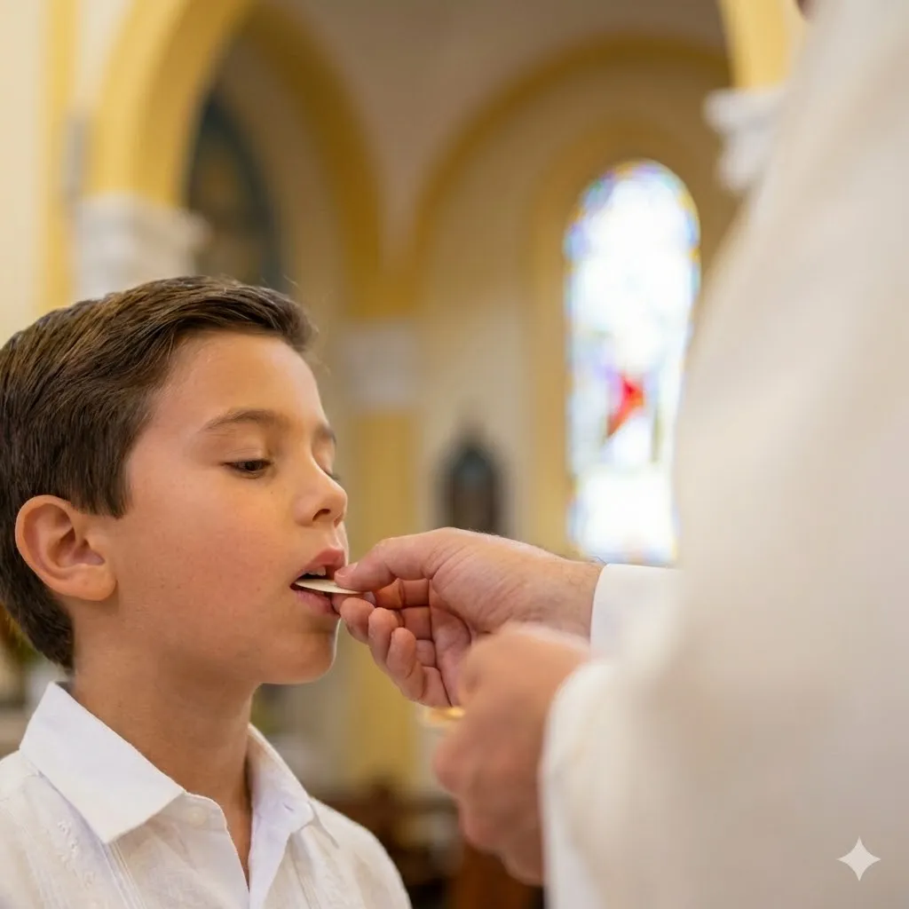

Nuestros Itinerarios de Fe

Iniciación Cristiana (Niños)
Acompañamos el despertar religioso de los más pequeños, preparándolos con alegría para la Reconciliación y su Primera Comunión.

Catequesis Juvenil (Confirmación)
Un espacio dinámico para profundizar la fe, descubrir los dones del Espíritu Santo y asumir un compromiso maduro con la Iglesia.

Catequesis de Adultos (RICA)
Para quienes desean iniciarse en la fe católica o completar sus sacramentos (Bautismo, Comunión y Confirmación) en la adultez.